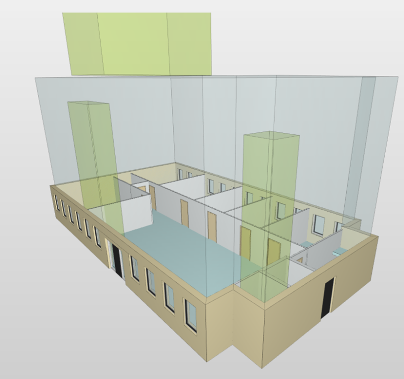
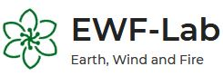
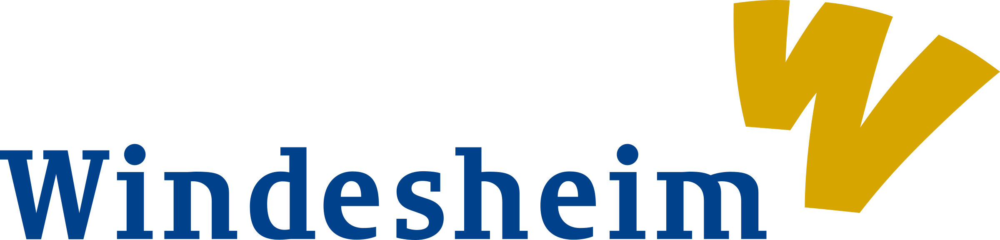
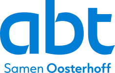
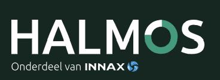
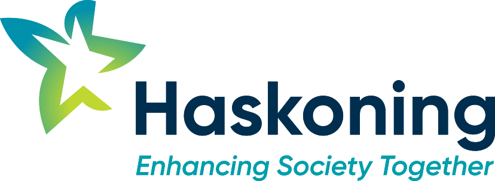
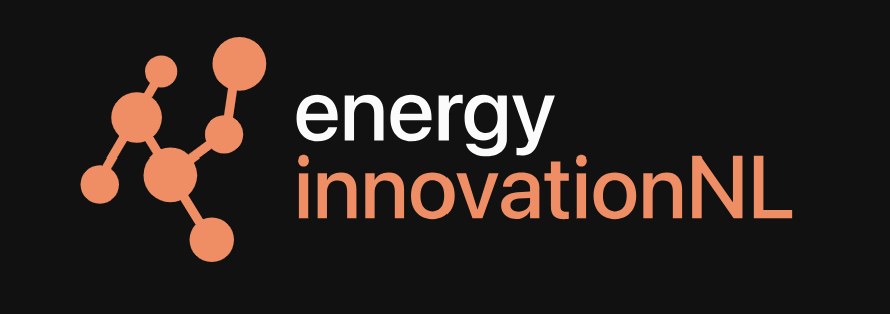
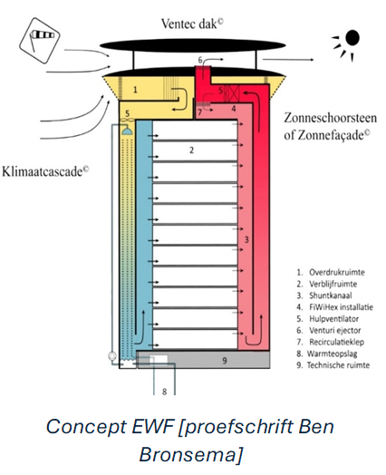
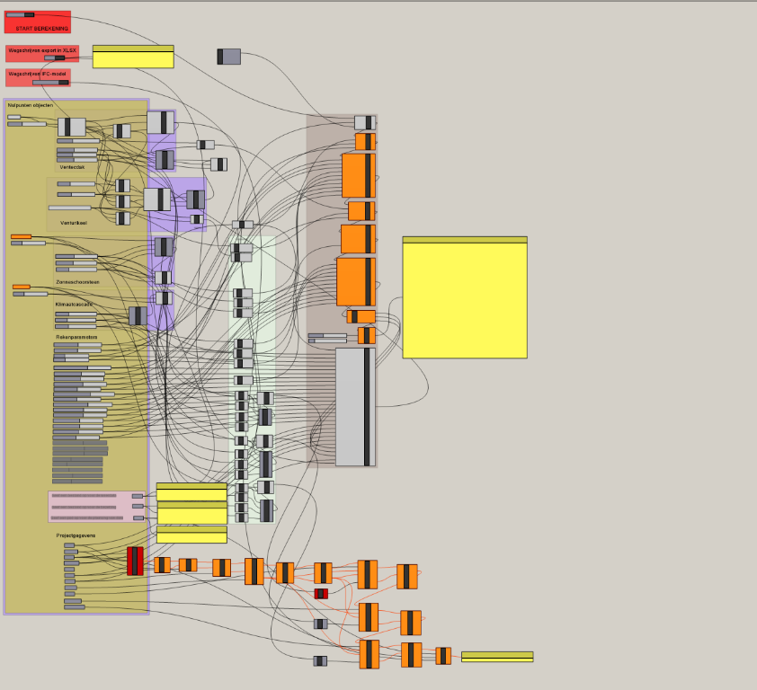
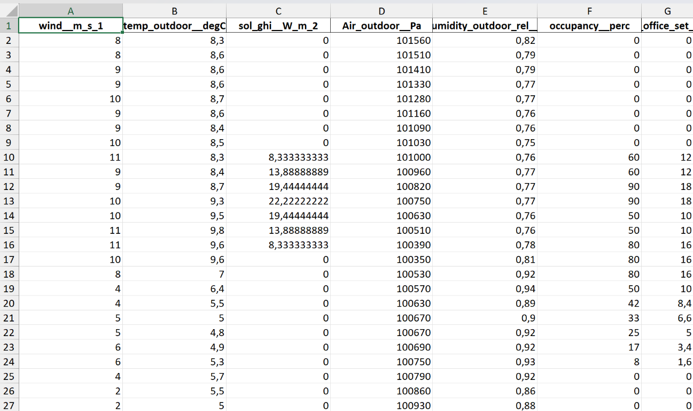

Voer de parameters in
Pas gebouwparameters aan en gebruik bezettingsprofielen en weerdata als invoer.








EWF Tech Simulator
Met de EWF Tech Simulator onderzoek je hoe Earth, Wind & Fire werkt en wat het concept kan betekenen voor een gebouw.


Earth, Wind & Fire
Earth, Wind & Fire (EWF) is een lagedrukventilatieconcept voor utiliteitsgebouwen. Het combineert winddruk, zoninstraling en een klimaatcascade om de ventilatielucht te conditioneren.
Het Ventec-dak benut winddruk en de zonneschoorsteen zonnewarmte. De klimaatcascade regelt de temperatuur en vochtigheid van de ventilatietoevoerlucht. De simulator helpt ontwerpers en onderzoekers de werking en energetische prestaties van deze componenten te verkennen.
Van datainvoer naar prestatieanalyse
Bereken de energetische prestaties van een EWF-systeem voor een gebouw over een jaar, in tijdstappen van één uur. In Grasshopper voor Rhino 9 kun je projectspecifieke invoer aanpassen en de berekening per component volgen.
Pas gebouwparameters aan en gebruik bezettingsprofielen en weerdata als invoer.

Volg de berekening van zonneschoorsteen, Ventec-dak, overdrukruimte en klimaatcascade.

Bekijk de componenttoestanden en het energiegebruik per uur; exporteer de resultaten naar Excel.

Waarom deze simulator?
Bereken niet alleen het totale energiegebruik, maar ook hoe de afzonderlijke EWF componenten zich gedurende het jaar gedragen. Zo kun je invoer en scenario's gericht onderzoeken en vergelijken.
De simulator is opgebouwd uit afzonderlijke, gekoppelde EWF componenten. Dat maakt de berekening beter te volgen en te toetsen.
Open het Grasshopper-bestand in Rhino 9. Er is geen aanpassing in de broncode nodig om data in te voeren en berekeningen uit te voeren.
Exporteer de afmetingen en posities van EWF-componenten als 3D-model en maak de systeemopzet bespreekbaar met ontwerp- en bouwpartners. Voor IFC-export is de IFChopper-plugin nodig.
Zelf ervaren?
De open-source repository bevat het Grasshopper-bestand, voorbeeldbestanden en een handleiding om je eerste simulatie te starten. Ook kan de simulatie via een zelfstandige Python-runner worden uitgevoerd, zonder dat Rhino en Grasshopper nodig zijn.